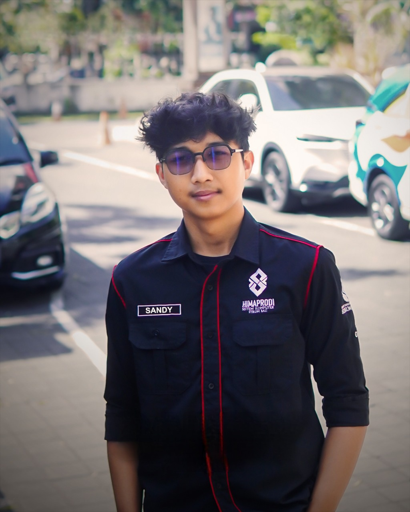

Sandy
Dwiartha.
Membangun website dan sistem digital yang fungsional, terstruktur, dan mudah dikembangkan — dari tampilan hingga logika di baliknya.



Pengembang sistem berbasis web yang berfokus pada pembuatan solusi digital yang fungsional dan mudah dikembangkan. Saat ini saya menempuh pendidikan di ITB STIKOM Bali, setelah sebelumnya membangun fondasi teknis di SMK TI Bali Global Jimbaran.
Fokus saya berada pada pengembangan backend dengan Laravel hingga pengelolaan database.
Membangun logika aplikasi, API, autentikasi, serta struktur sistem yang terorganisir dan mudah dikembangkan.
Menerjemahkan rancangan menjadi antarmuka responsif dengan perhatian pada hierarchy, usability, dan detail visual.
Mengelola alur kerja pengembangan dengan menggunakan Git dan GitHub untuk kolaborasi tim dan version control.
Perjalanan belajar dan proyek yang membentuk saya.
ITB STIKOM Bali
2024 — SekarangPendidikan & Organisasi
Berperan aktif dalam kegiatan organisasi mahasiswa dengan fokus pada koordinasi program kerja, komunikasi, kolaborasi tim, dan pengembangan soft skill.
Pengembangan Proyek
Mengembangkan berbagai solusi digital berbasis web, termasuk sistem manajemen dan platform profil organisasi dengan fokus pada fungsionalitas dan pengalaman pengguna.
SMK TI Bali Global Jimbaran
2021 — 2024Organisasi & Teknologi
Berpartisipasi dalam OSIS serta mendukung kebutuhan digital dan dokumentasi berbagai kegiatan sekolah.
Pengembangan Proyek
Mengembangkan frontend website untuk Stibajra Technology Competition dan Open Recruitment OSIS dengan fokus pada struktur konten, estetika, dan akses informasi.
Beberapa karya yang pernah saya bangun.
Website, aplikasi, dan sistem digital yang saya kerjakan selama proses belajar maupun untuk kebutuhan nyata.
Punya ide yang ingin diwujudkan?
Terbuka untuk berdiskusi mengenai website, sistem informasi, maupun kebutuhan digital lainnya.
Mari berdiskusi